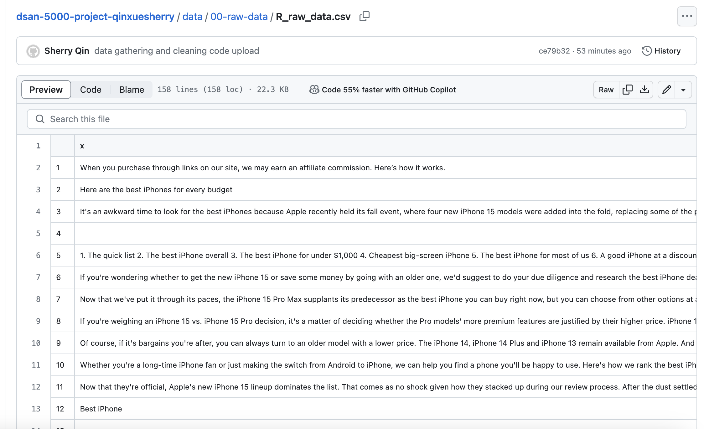
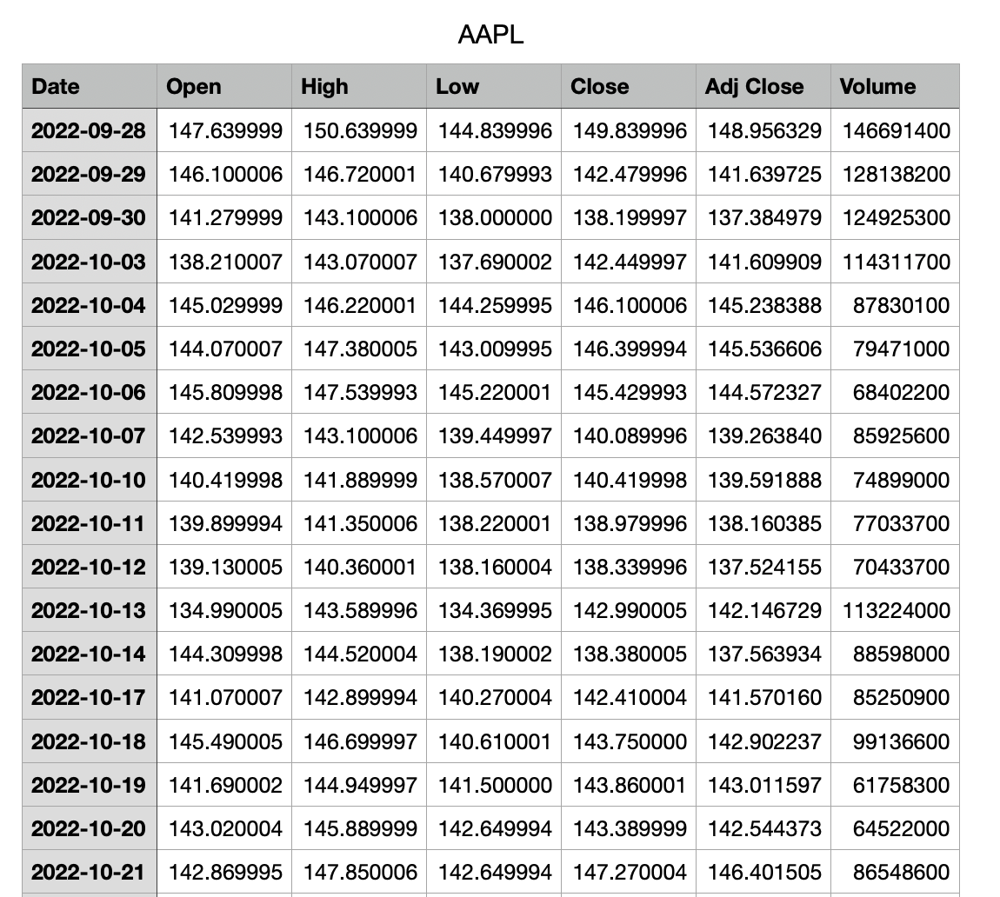
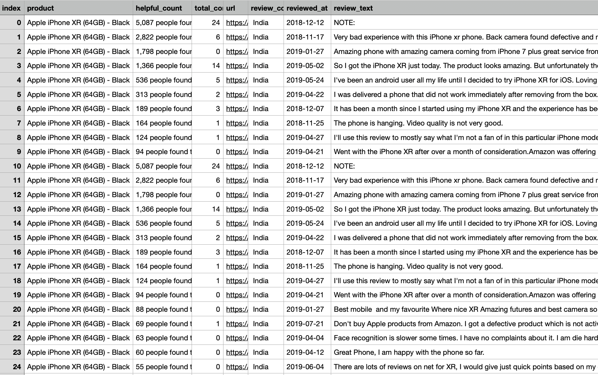

Data Gathering
Main Goal
For this project, the main point is to find people’s attitudes towards Apple Products and evaluate what kind of mobile products would attract the public to purchase. Thus, I need to see both text data to reflect people’s attitudes toward Apple Products and record data to evaluate the products’ popularity and people’s willingness to buy. Thus, I need to search online to find either people’s comments about Apple Products or the news reports related to Apple products. Also, I need to find some datasets to evaluate what kinds of mobile products would be popular in the market so that when the new generation of Apple Products comes out, we can predict the popularity of the new products.
Dataset finding
- News API: Gathering news’ reports to reflect the public attitudes towards Apple products.
- News Webpage: Collect more news reports to reflect the public attitudes
- Weibo: Crawl comments from the social media to see the users’ reaction to the new Apple Products
- Yahoo! Finance: collect Apple’s recent stock performance and this also can reflect the apple products’ popularity.
- Mobile phone ratings: trying to find a dataset that have ratings related to all different functions of the mobile phones and what their popularity with the mobile phones.
Tools using
- Python
- R
- News API
- Downloading Dataset
Data Gathering
Gathering data of hot posts from Weibo
- Python, Web crawl
- Dataset Collecrion: Weibo is a Chinese social platform that Chinese public sharing thoughts and post articles. There are 52 illion daily active users via that social media.I crawled data from Weibo to catch some hot posts about people’s reaction to the new publishion of Apple products. Most of the articles relected strong sentiments towards the products
- weibo data gathering code (python)
- raw data for weibo(python)
- sample raw data

- Dataset Exaplaination: From the view of dataset, this is a text dataset and we can see the users’ ID and the publish dates and also the contents and commens(in Chinese).
Gathering data of news text
- Python, News API
- Dataset Collection: crawl data by using NewsAPI with Python and try to extract some key words from the news. The news API can help me to find the most updated articles related to the topics I am trying to search and based on the contens, I can analyze those text to see what’s the attitude of media towards the iPhone.
- News data gathering code (python)
- raw data for newsAPI(python)
- sample raw data

- Dataset Exaplaination: As shown above, this is a text dataset and we can read all the articles that News API collected.
Gathering data of news from website
- R, Rvest
- Dataset Collection: Revest is also an useful tool to help up to crawl conetent from the website we want. I used Rvest to craw text with R and get content from the news website I selected.
- News webpage data gathering code (R)
- raw data for news webpage(R)
- sample raw data 
- Dataset Exaplaination: as shown in above, as shown above, this is also a text dataset and we can read all the articles that Rvest collected.
Stock data from Yahoo! Finance
- Downloading from Yahoo! Finance
- Dataset Collection: Stock price and trend also can reflect the company’s popularity and how the public’s attitude towards the company. Thus I downloaded the Apple stock’s recent stock price and trying to analyze its stock trend.
- Dataset source: Apple Stock in Yahoo! Finance
- sample raw data 
- Dataset Explaination: As shown in the dataset, this is a record dataset. We can see there’s the date, Openprice, highest price, lowest Price, close price, and trading volume. Based on this dataset, for nect next step we can analyze its stock prices changes.
Mobile phones function rating
- Collecting from Dxomark
- Dataset collection: The dataset that evaluate the functions for a mobile phone can help me to identify the public’s buying willingness to the product. Thus I collected the dataset from the DXOMARK website that reflect the device’s performance and the quality of the user experience.
- Dataset source: DXOMARK smartphone reviews
- sample raw data

- Dataset Explaination: As shown in the dataset, this is a record dataset. The dataset has its ranking and devices’ name, its Launch price, Launche date, camera rating, selfie rating, audio rating, display rating and battery ratings. All those ratings are important factors that impact the customers’ buying inetent. Thus this dataset will help me to predict wether a smartphone product will be popular based on the ratings.
iphone_11_review_dataset
- Kaggle dataset
- Dataset collection: This dataset is both record and text data. I download it from the kaggle website. This dataset can help me better understand people’s reaction and reviews towards apple products.
- Dataset source: Kaggles
- sample raw data 
- Dataset Explaination: the dataset includs the customers’ reviews and ratings from Amazon for iphone 11. The text contained people’s reviews and comments. The record data are related to people’s ratings, helpful counts, review country, etc. For this dataset, I will simply use for the data explortion process for better understand this topic.
Conclusion and Next Step
In this part, I collected 6 different datasets that related to my research topic, Apple Products’ Popularity. The datasets are including text data and record data. The methods I used to collect data are using news API, crawling data with Python, Rvest with R, and downloading related data directly from the website.
Next step I will clean and modified the data as need for preparing for the future model training.